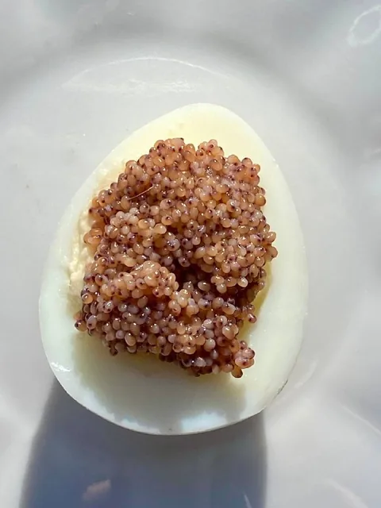

Судовой журнал · Олег Гугунава
Перепелиные яйца с креветочной икрой

Цены и условия в авторском тексте относятся к дате публикации. Действующие цены — в каталоге.
Люди делятся примерно поровну на тех, кто любит, чтобы вареные северные креветки были с икрой, и на тех, кто очищая креветку, выбрасывает икру вместе с другими несъедобными частями
На самом деле ничего выбрасывать не нужно. Все «запчасти» можно запечь в духовке до хруста, тщательно измельчить и использовать в качестве приправы.
С икрой тоже можно обойтись разумно. Попробуйте поступить следующим образом.
Вареные перепелиные яйца разрежьте пополам. Желтки смешайте с хорошим сливочным маслом и каплей ароматной шрирачи. Разотрите все вилкой. Верните начинку обратно в яйцо, предварительно отрезав у него для устойчивости «жопку». Если вас в этом предложении смущает понятное слово жопка, то просто отсеките сегмент от овоида.
Креветочную икру очистите от лапок — они обычно очень плотно ее обхватывают. Выложите икру на подготовленные яйца с начинкой. Подавайте.
Если вашим гостям незнакомы слова пейджер, дискета и тонометр, можете говорить, что на яйцах — черная икра.